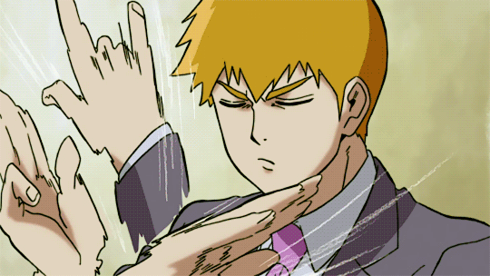

Arakata Reigen
História
Reigen sempre foi um jovem bem inteligente, suas notas sempre estiveram acima da média. Ele antes de abrir seu próprio negócio no ramo espiritual, era um assalariado regular.
Reigen sempre foi um jovem bem inteligente, suas notas sempre estiveram acima da média. Ele antes de abrir seu próprio negócio no ramo espiritual, era um assalariado regular.

Antes de conhecer seu mestre, Arataka Reigen , Mob foi medo de suas próprias habilidades e foi à procura de uma força orientadora a seguir. Ele logo aprendeu tanto Reigen e sua paixão de infância, Takane Tsubomi , que a sua capacidade psíquica não fazê-lo inerentemente superior a qualquer outra pessoa. Ele também aprendeu que a habilidade psíquica não deve ser usada contra outras pessoas. Esta filosofia leva-o a onde ele está atualmente e é um dos muitos traços definidores dele.

Covinhas( エクボ ) é um espirito que se alto intitula um espirito de classe alta, e fala sobre os treinamentos infernais que praticou para alcançar esse nivel. Covinhas desejava ser o deus do mundo, por esse motivo fundou um culto( LOL originalmente em japonês 笑 ) para que fosse adorado, porém quando conheceu Mob ele mudou de ideia e agora almeja que Mob seja o deus desse mundo.
Covinhas com sua habilidade de possuir pessoas, possuiu Ritsu (irmão de Mob), logo após de ser desintegrado por Teru tentando proteger Mob, além disso ajudou no resgate de Ritsu do ramo 7 de Claw.

A personalidade de Teru é divida em duas partes a primeira antes de conhecer Mob e a segunda depois de conhecer Mob. Antes de conhecer Mob, Teru nao conhecia outras pessoas com poderes paranormais, e isso o levou a pensar que ele era a pessoa mais forte, principalmente quando a Claw começou a enviar paranormais sintéticos para o "recrutar", como eles eram fracos e Teru os derrotava com facilidade isso fez com que o ego dele aumentasse cada vez mais.
Porém quando ele conheceu Shigeo ele viu que havia outros que nem ele e mais poderosos também, depois que ele perdeu para Mob Teru adotou a filosofia dele, de não usar poderes psíquicos em pessoas a menos que seja necessario.

Ritsu Kageyama, irmão mais novo de Mob, é um personagem secundário do anime Mob Psycho 100, estudante e membro do Conselho Estudantil do primeiro ano no colégio Salt Middle. Ele sempre teve um complexo de inferioridade e um anseio obsessivo por uma habilidade psíquica, já que testemunhou o imenso poder de Mob enquanto crescia.
Após um tempo, Ritsu finalmente consegue desenvolver seus próprios poderes e se transforma em um esper muito forte, mas não tanto quanto seu irmão, pois as habilidades psíquicas de Mob estão ligadas aos seus sentimentos de sofrimento e culpa.